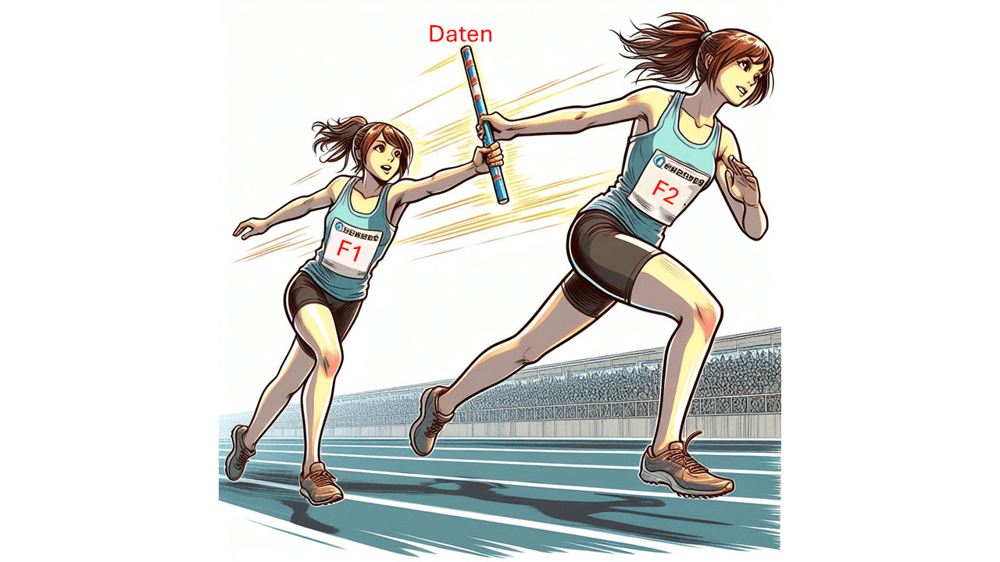
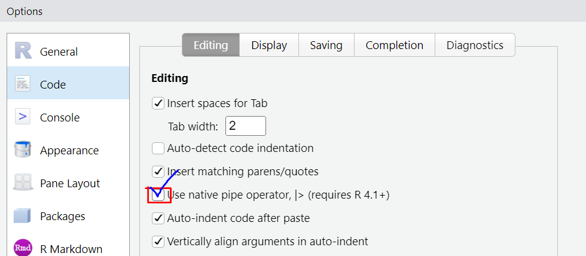
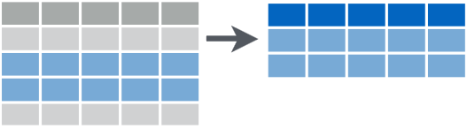

Lernziele
- du lernst was eine
Pipeist - du weißt wann du eine
Pipenutzen kannst - du weißt wie du eine
Pipenutzen kannst
Pipe
Das englische Pipe ist hier als Röhre zu verstehen, nicht als Pfeife. Auch wenn es lustig wäre, einen “Pfeifen-Operator” zu haben.
Der Pipe-Operator |> leitet den Output
(Daten) einer Funktion(F1) als Input an die nächste
Funktion (F2) weiter, quasi wie eine Röhre durch die das Ergebnis der
ersten Funktion durchgeschickt wird. Analog kannst du es dir wie einen
Staffelstab bei einem Staffellauf vorstellen, der von jeder Läuferin
etwas (z.B. in seiner Position) verändert weitergegeben wird bis dieser
am Ziel ist.

Hier ist ein Beispiel:
# mean(data, na.rm = TRUE)
mean(einkaufen$alter, na.rm = TRUE)ist genau das Gleiche wie:
# data |> mean(na.rm = TRUE)
einkaufen$alter |> mean(na.rm = TRUE)Die Pipe |> fügt das, was reingegeben wird,
immer als erstes Argument bei der
nächsten Funktion ein. Das geht meistens gut, denn wir erinnern uns an
das Tutorial “Funktionen erkunden”: Das erste Argument ist meistens das
Datenargument.
Auch hier: Normalerweise würde es ohne Pipe so aussehen:
paste(7, "Zwerge")und mit Pipe so:
7 |> paste("Zwerge")So lange es nur eine Pipe ist, ist sie relativ harmlos und überflüssig, und du fragst dich vielleicht wozu das Ganze gut ist. Die Pipe hat das große Potential, langen, verschachtelten Code auf elegante Art lesbar zu machen. Nehmen wir zum Beispiel mal die schnelle Erstellung eines Balkendiagramms (mehr dazu im Visualisierungstutorial):
einkaufen$verkehrsmittel |> table() |> barplot()Was sieht besser aus und ist besser zu erfassen? Der obige Code, oder das hier?
barplot(table(einkaufen$verkehrsmittel))Beides ist von der Funktion her äquivalent, aber die Pipe ermöglicht ein klares Lesen von links nach rechts:
„Nimm die Spalte Verkehrsmittel, tabelliere die Häufigkeit der einzelnen Ausprägungen, dann zeichne daraus ein Balkendiagramm“.
einkaufen$verkehrsmittel |> table() |> barplot()Verbalisierung
|> kann gelesen werden wie ein „dann‘.
die %>% Pipe
%>% ist auch ein Pipe-Operator, der jedoch aus dem
magrittr-Paket stammt. Bis vor kurzem gab es
|> noch nicht, und vorher war %>%
jahrelang der Standard, der deswegen auch überall in Anleitungen im
Internet zu sehen ist und immer noch sehr häufig genutzt wird.
Die beiden Pipe-Operatoren tun aber ziemlich genau das selbe und unterscheiden sich vor allem in einigen technischen Details, wie sie mit Spezialfällen umgehen, was aber hier nicht wichtig ist für dich. Wichtig ist, dass du beide schon mal gesehen hast und weißt, dass:
%>%nur funktioniert wennmagrittrgeladen ist|>inbase Reingebaut ist und die gleiche Funktion hat (wenn auch in einigen Spezialfällen anders reagiert, die uninteressant sind auf unserem Level).
Pipelines
Die Beispiele mit zweifacher Verschachtelung oben waren ja trotzdem noch halbwegs lesbar. Die Pipe wird aber dann erst richtig interessant, wenn die Daten eine lange, vielschrittige Aufbereitung durchlaufen müssen - so ähnlich wie in einer Fabrik:
metall |>
schmelzen() |>
gießen() |>
abkühlen() |>
lackieren() |>
verpacken() |>
verladen()„Nimm Metall. Schmelze es, dann gieße es, dann kühle es ab, dann lackiere es, dann verpacke, dann dann verlade es.“
Für gute Lesbarkeit empfielt es sich, nach jeder Pipe eine neue Zeile zu beginnen.
Das ist besonders bei der Aufbereitung von Datensätzen sehr häufig so, was auch Data Wrangling genannt wird und in einem eigenen Tutorial Raum finden wird.
Übung bekommen
Jetzt bist du gefragt! Werde zu Mario oder Luigi und nutze die Pipe, um an dein (Analyse-)Ziel zu kommen.
Wir nutzen weiterhin den Beispieldatensatz einkaufen.
Hier ein kleiner Einblick in die Variablen, die du heute benutzt:
Noch ein kurzer Hinweis: Falls du das | Zeichen noch nie
verwendet hast, hier die Tastenkombination:
Windows/ Linux: alt gr +
< oder str + alt +
<
Mac: ⌥+ 7
Am besten nutzt du das in RStudio das eingebaute Tastaturkürzel
Strg/Cmd + Umschalt + M. Dadurch
wird ein |> mit Leerzeichen umgeben eingefügt.
Dafür kannst du unter Tools > Globale Optionen
folgende Änderung vornehmen, um |> anstelle von
%>% zu verwenden:

1
Nutze die Pipe für die Funktion summary(), um für die Werte von
einkaufen$verkehrsmittel den Modus zu bestimmen.
# Daten |> funktion() # Die Daten der Variable Verkehrsmittel werden in die Funktion summary() gefüttert
einkaufen$verkehrsmittel |> summary()2
Nutze wieder den einkaufen-Datensatz. Ermittle den
Mittelwert für die Weglänge einkaufen$weg in dem
du die Daten mittels Pipe in die Funktion eingibst. Schließe die
NAs dafür von der Berechnung aus.
# Die Variable heißt einkaufen$weg
# Die Funktion für den Mittelwert ist mean()
# Das Argument kannst du durch Eingabe von `mean?` in der Console herausfinden
# # Daten |> funktion( `zweites` Argument) # Die Daten der Variable Weg werden in die Funktion mean() an erster Stelle eingesetzt, es folgt das Argument na.rm = TRUE, um die NAs auszuschließen
einkaufen$weg |> mean(na.rm = TRUE)Genial! Du hast jetzt also schon verstanden, wie du die Pipe für eine Funktionen mit einem zweiten Argument nutzt!
Als letztes gibt es hier jetzt schon einen kleinen Einblick in das
Tutorial Data Wrangling, da die Pipe hier eine große Rolle
spielt.
Daten filtern
Neues Paket:
Der Paketname dplyr ist eine Abkürzung für data
plyers, „Datenzange“. Es ist super hilfreich was das Arbeiten mit
Tabellen angeht, und mit einem Fokus auf Leserlichkeit und
Übersichtlichkeit des Codes entworfen worden. Wir stellen das hier vor,
weil sehr viele Funktionen aus diesem Paket super in eine Pipeline
passen.
Die Funktion filter() aus dplyr erlaubt,
bestimmte Zeilen aus einem Datensatz herauszugreifen mit der
„Datenzange“.

Zum Beispiel im einkaufen-Datensatz alle Zeilen von
Personen, die als Lieblingsessen „Pizza“ angegeben haben:
filter(einkaufen, essen == "Pizza")Achte auf die Spalte “Essen”! Im ganzen Datensatz werden nur noch Zeilen angezeigt, die als Essen “Pizza” angegeben haben.
filter() Basic Syntax folgt dieser Form:
filter(Daten, Variable == Wert)Oder mit Pipe:
Daten |>
filter(Variable == Wert)filter() erwartet als Argumente den
Datensatz, die Variable mit
Operator und filterndem Wert.
3 (schwerer)
Nutze für diese Aufgabe wieder die Pipe.
Nimm den Datensatz einkaufen, dann pipe ihn in die
Funktion filter(), und filtere dort in der Variable
essen nach dem Wert "Pasta". Übergib dann die
Daten an die Funktion count(), um dir die Anzahl von
Menschen mit Lieblingsessen “Pasta” ausgeben zu lassen.
# Nutze den gesamten Datensatz von einkaufen
# filter(Variable Operator Wert)
# count()
# Datensatz |>
# Funktion(zweites Argument) |>
# Funktion()# Die Daten des Datensatz einkaufen werden in die Funktion filter() an erster Stelle eingesetzt, es folgt das Argument wonach gefiltert wird: In der Variable Essen nach Einträgen die gleich (==) "Pizza" sind.
einkaufen |>
filter(essen == "Pasta") |>
count()Applaus!!! 👏 Das war wirklich nicht einfach!
Du hast die Pipes gemeistert und bist bereit für das nächste Tutorial!
Abschlussquizz
Learnings
So hast du heute abgeschnitten:
Zusammenfassung
In diesem Tutorial habst du die Pipe-Operatoren |>
und %>% kennengelernt. Der Pipe-Operator leitet den
Output einer Funktion als Input an die nächste Funktion weiter, was zu
einem klaren und lesbareren Code führt. %>% und
|> sind äquivalente Pipe-Operatoren, wobei
%>% aus dem magrittr-Paket stammt und
|> in base R eingebaut ist.
Diese neuen Konzepte kennst du nun:
Stichpunktartige Beschreibung
Neue Funktionen
eine Tabelle mit den wichtigesten Codes des Tutorials
| Code | Beschreibung |
|---|---|
x |> f() |
Leitet den Output von x als erstes Argument an
f() weiter. |
x %>% f() |
Äquivalente Verwendung von %>% für die gleiche
Funktionalität. |
paste(x, "Zwerge") |
Verbindet den Vektor x nach der Konvertierung in
char mit “Zwerge” |
table(x) |
Erstellt eine Häufigkeitstabelle für die Werte in
x. |
barplot(x) |
Erstellt ein Balkendiagramm für die Werte in x. |
filter(data, condition) |
Filtert Daten nach einer bestimmten Bedingung. |
count(x) |
Zählt die Werte in x. |
Credit
Dieses Tutorial wurde von Lukas Bruelheide und Marie Klosterkamp geschrieben.
Bei der Erstellung wurde teilweise von ChatGPT und Bing Image Creator Gebrauch gemacht.